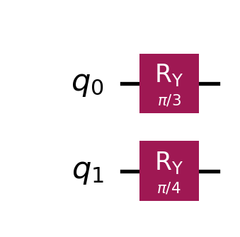

Encoding Math into Metal: Representing Vectors and Matrices on a QPU
How to translate classical linear algebra structures into quantum states and operators, and efficiently calculate expectation values using the Qiskit Estimator.
Quantum Computing
Qiskit
Linear Algebra
Published
December 2, 2025
In my previous post, we established the mathematical goal of VQE: finding a normalized vector \(v\) that minimizes the expectation value \(v^T A v\).
Mathematically, this is elegant. Computationally, it poses a massive storage problem. If our system has \(N\) states, \(v\) is a vector of size \(N\), and \(A\) is a matrix of size \(N \times N\). As we scale up, storing these explicitly becomes impossible.
To solve this on a quantum computer, we need to translate our classical data structures into quantum mechanics. We need to answer two fundamental questions:
How do we represent a high-dimensional vector \(v\) on a quantum processor?
How do we represent the matrix \(A\) so we can calculate its expectation value?
1. Representing an N-dimensional Vector
In the classical world, if I want to store a state vector \(v\) of size \(N=4\), I allocate an array of 4 floating-point numbers in memory:
The memory requirement grows linearly with \(N\). However, in quantum problems, \(N\) represents the dimension of the Hilbert space, which grows exponentially with the number of particles or qubits (\(N = 2^n\)).
The Quantum Compression
On a quantum computer, we use Amplitude Encoding. We map the indices of the vector to the computational basis states of our qubits.
To represent a vector of size \(N\), we need only \(n = \log_2(N)\) qubits. For our \(N=4\) example, we need just \(n=2\) qubits. The indices \(0, 1, 2, 3\) correspond to the binary states \(|00\rangle, |01\rangle, |10\rangle, |11\rangle\).
The vector \(v\) is then represented as the superposition state of the quantum system:
There is one strict constraint. In classical coding, a vector can have any magnitude. In quantum mechanics, probabilities must sum to 1. Therefore, the vector \(|v\rangle\) must be normalized such that the sum of the squared absolute values of its coefficients equals 1:
\[
\sum_{i=0}^{N-1} |v_i|^2 = 1
\]
This means that our quantum state \(|v\rangle\) is mathematically identical to the normalized vector \(v\) we discussed in the previous post. We aren’t “storing” the numbers \(v_i\) in digital memory addresses; the numbers \(v_i\) exist physically as the probability amplitudes of the wavefunction itself.
2. Representing the NxN Matrix
Now, what about the matrix \(A\)? Classically, \(A\) is a dense grid of numbers. If the vector has dimension \(N=2^n\), the matrix has \((2^n)^2\) entries. Storing a matrix for just 50 qubits would require more memory than exists on Earth.
In the quantum context, \(A\) represents an observable (usually a Hamiltonian). We do not store this matrix in the quantum computer’s memory. Instead, we represent it in the native language of the quantum processor: Pauli Strings.
The Decomposition
The set of Pauli matrices \(\{I, X, Y, Z\}\) forms a complete basis for the space of \(2 \times 2\) Hermitian matrices. For a multi-qubit system, we use tensor products of these matrices (e.g., \(Z \otimes Z\) or \(X \otimes I\)).
Any Hermitian matrix \(A\) can be written as a weighted sum of these Pauli strings:
\[
A = \sum_{j} c_j P_j
\]
Where \(c_j\) are real-valued scalar coefficients and \(P_j\) are Pauli strings.
A Crucial Detail: Where do these strings come from?
You might be asking: “If the matrix \(A\) is too big to store, how do we calculate this decomposition?”
There are two scenarios:
The Mathematical Route: If we did have a small arbitrary matrix, we could mathematically decompose it using the Hilbert-Schmidt inner product. We project the matrix onto each Pauli basis tensor to find the coefficients \(c_j\). However, doing this for large \(N\) defeats the purpose, as we would need to build the giant matrix first.
The Practical Route (Direct Mapping): In useful quantum applications (like Chemistry or Optimization), we never build the dense matrix.
In Chemistry: The interaction between electrons is described by the Jordan-Wigner or Bravyi-Kitaev transformations, which map the physical system directly into a sum of Pauli strings (\(O(n^4)\) terms) without ever creating a \(2^n \times 2^n\) array.
In Optimization (MaxCut): The cost function of a graph cut maps directly to a sum of \(Z_i Z_j\) terms based on the graph’s edges.
This allows us to work with operators for 50+ qubits (a vector space of \(10^{15}\)) while only storing a polynomial number of Pauli terms in our laptop’s memory.
Note: If these transformations sound complex, don’t worry. We will dedicate a future post in this series specifically to Problem Mapping—showing exactly how to turn a physical chemistry problem or a logistics graph into these Pauli strings without ever building the giant matrix.
Why This Solves the Complexity Problem
This representation changes the problem from “massive matrix multiplication” to “linear summation.”
Recall that we want to calculate the expectation value \(\langle v | A | v \rangle\). Using the linearity of expectation, we can break this down:
\[
\langle v | A | v \rangle = \langle v | \left( \sum_j c_j P_j \right) | v \rangle = \sum_j c_j \langle v | P_j | v \rangle
\]
This is the key to the efficiency of the algorithm. We don’t need a quantum computer that can “process” the giant matrix \(A\) all at once. We only need a quantum computer that can measure simple Pauli terms.
3. Calculating the Expectation Value
We have defined our vector \(|v\rangle\) and decomposed our matrix \(A\). Now comes the actual computation: calculating \(\langle v | P_j | v \rangle\). How do we actually ask a quantum computer for this number?
A) The Manual Approach: Sampling Eigenvalues
Let’s assume our Hamiltonian is just a single Pauli string, say \(Z\) on a single qubit. The expectation value is simply the weighted average of outcomes. We run the circuit, measure the qubit, and collect the bitstrings (e.g., 0, 0, 1, 0…). mapping 0 to \(+1\) and 1 to \(-1\).
Why this mapping? This isn’t arbitrary. It relies on the known spectral properties of Pauli matrices. The computational basis states \(|0\rangle\) and \(|1\rangle\) are the eigenstates of the Pauli \(Z\) operator, with eigenvalues \(+1\) and \(-1\) respectively:
When we measure a qubit, we are collapsing it into one of these eigenstates. The value we associate with that outcome is the corresponding eigenvalue.
Extending to Multi-Qubit Terms Crucially, the eigenvalue of a tensor product of Pauli matrices is simply the product of the eigenvalues of each individual matrix.
For example, if we are measuring the operator \(Z \otimes Z\) on two qubits and we observe the state \(|01\rangle\): * The first qubit is in \(|0\rangle\) (eigenvalue \(+1\)). * The second qubit is in \(|1\rangle\) (eigenvalue \(-1\)). * The total eigenvalue for this shot is \((+1) \times (-1) = -1\).
This allows us to reconstruct the value of any complex Pauli string simply by multiplying the results of individual qubit measurements.
What about X and Y? Quantum hardware generally only measures in the Z-basis. If our Pauli string contains an \(X\) or \(Y\), we cannot measure it directly. We must apply a basis rotation gate (like a Hadamard for \(X\)) just before measurement to align the axis with \(Z\).
B) The Challenge: The Explosion of Terms
In a real problem, our matrix \(A\) might contain thousands of Pauli terms.
If we were to run a separate quantum experiment (Sampler job) for every single term, the overhead would be astronomical.
The Solution: Operator Grouping Fortunately, we can exploit commutativity. If two Pauli strings commute (specifically, qubit-wise commutativity), they can be measured in the same basis simultaneously.
For example, \(Z_0 Z_1\) and \(Z_0 I_1\) both require the Z-basis. We can measure both in a single “shot”. However, \(Z_0 Z_1\) and \(X_0 X_1\) do not commute (Heisenberg’s Uncertainty Principle). You cannot measure Z and X on qubit 0 at the same time.
Therefore, we group the thousands of Pauli strings into a small number of commuting families. We run one quantum job per family, effectively compressing thousands of measurements into a few dozen jobs.
C) The Abstraction: The Qiskit Estimator
Doing this efficiently involves significant bookkeeping: checking commutativity, grouping terms, appending rotations, and aggregating statistics.
In modern Qiskit, this is abstracted away by the Estimator. The Estimator is a primitive that takes the Circuit (state) and the Operator (matrix), handles the grouping and rotations internally, and returns the final floating-point expectation value.
4. Code Example: The Estimator in Action
Let’s make this concrete. We will not start with quantum gates; we will start with a standard linear algebra problem.
The Classical Problem Imagine we have a \(4 \times 4\) Hermitian matrix \(A\) and a 4-dimensional vector \(v\), and we want to calculate \(v^T A v\).
We want to verify the expectation value for a specific normalized vector: \[
v \approx \begin{bmatrix} 0.80 \\ 0.46 \\ 0.33 \\ 0.19 \end{bmatrix}
\]
This problem is so small that one could do this on paper to determine that \(v^T A v \approx 0.299\). However, we are going to use this example to illustrate how this problem can be mapped to a quantum system and how it produces an output.
1. The Matrix Decomposition: We cannot load the \(4 \times 4\) array into the QPU. We must break it down. Looking at the structure of \(A\): * The diagonal terms correspond to \(Z \otimes Z\). * The off-diagonal terms correspond to \(X \otimes X\).
We can rewrite \(A\) exactly as: \[A = 0.5 (Z \otimes Z) + 0.2 (X \otimes X)\]
2. The Vector Construction: Quantum computers always start in the \(|00\rangle\) state (the vector \([1, 0, 0, 0]\)). We need to build a circuit to transform this into our target vector \(v\). We can do this using \(R_Y\) (Rotation-Y) gates.
Applying \(R_Y(\pi/3)\) to qubit 0 creates amplitudes \(\approx [0.866, 0.5]\).
Applying \(R_Y(\pi/4)\) to qubit 1 creates amplitudes \(\approx [0.924, 0.383]\).
The tensor product of these rotations results in exactly our target vector \([0.80, 0.46, 0.33, 0.19]\).
The Quantum Code
Now, let’s write the code to implement this mapping and verify the result matches our classical calculation.
Code
import numpy as npfrom qiskit import QuantumCircuitfrom qiskit.quantum_info import SparsePauliOpfrom qiskit.primitives import StatevectorEstimator# 1. The Matrix A (The Hamiltonian)# We define A = 0.5 * (Z on q0, Z on q1) + 0.2 * (X on q0, X on q1)hamiltonian = SparsePauliOp.from_list([ ("ZZ", 0.5), ("XX", 0.2) ])print("Operator A:", end=" ")print_hamiltonian(hamiltonian)print("\n")
Operator A: 0.50 * ZZ + 0.20 * XX
Code
# 2. The Vector |v> (State Preparation)# We use Ry gates to rotate the qubits from |0> to a superposition.# using real-valued rotations keeps the amplitudes real.qc = QuantumCircuit(2)qc.ry(np.pi/3, 0) # Rotate qubit 0 by 60 degreesqc.ry(np.pi/4, 1) # Rotate qubit 1 by 45 degreesprint("Circuit representing state |v>:")display(qc.draw("mpl"))
Circuit representing state |v>:

Code
# 3. The Abstraction (The Estimator)# We instantiate the local StatevectorEstimatorestimator = StatevectorEstimator()# The estimator handles the basis rotations and operator grouping internally.# Run format: run([(circuit, operator)])job = estimator.run([(qc, hamiltonian)])result = job.result()[0]# 4. The Result# result.data.evs is a NumPy array of expectation values.# We access the first element [0] to get our specific scalar result.expectation_value = result.data.evsprint(f"\nCalculated Expectation Value <v|A|v>: {expectation_value:.6f}")
Calculated Expectation Value <v|A|v>: 0.299251
What just happened? The Estimator acted as our “Linear Algebra Calculator.”
Input: It took a Circuit (a recipe for creating the vector \(v\)) and an Operator (the decomposition of matrix \(A\)).
Process: It handled the basis rotations and measurements internally (splitting ZZ and XX into different measurement jobs if needed).
Output: It returned the scalar value \(v^T A v\).
Next Steps: In the next post, we will finally close the loop. We will replace our fixed manual angles with variables, introducing the Ansatz, and use a classical optimization algorithm to find the specific angles that minimize our energy.